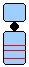
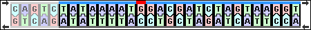
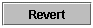
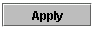

The genes are represented by red lines on each of the chromosomes. Click on any red line (gene) to see the DNA corresponding to that allele.
You can modify the DNA for the gene by clicking between any two letters to place the editing cursor at that position. To delete, use the backspace or delete key; to insert a base type one of the four letters A, G, C, or T, and the corresponding base will go into the molecule at the position of the cursor. The complementary base (A for T, C for G, T for A, and G for C) will go on the other strand.

If you want to cancel what you have done, click on the Revert button.
When you click on the Apply button, a new allele will appear on the pulldown menu in the chromosome view. The phenotype of the organism may or may not change. If the mutation you have created is recessive you may have to change alleles on both chromosomes to see a change.